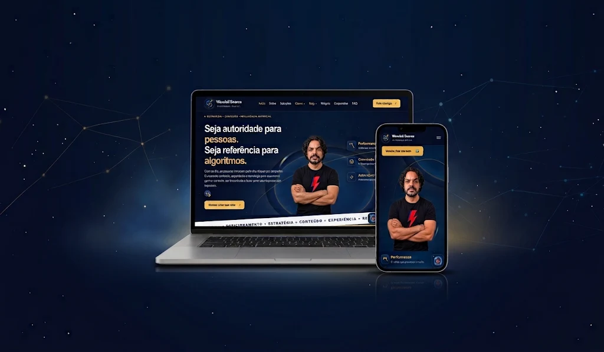

1
Presença e marca
SEO · Google · identidadeMelhorar a experiência no site, a presença nas buscas, o Perfil da Empresa no Google e a consistência da marca.
Exemplo: Site mais claro e padronização visual em canais oficiais.
Proposta de comunicação estratégica, tecnologia e capacitação
Cinco frentes integradas, um projeto de nove meses e entregas verificáveis para tornar a experiência do associado ainda mais simples e acessível.
Proposta personalizada · AEAMG
A AEAMG já oferece informação, benefícios, atividades e iniciativas de inclusão digital. Nosso objetivo é dar mais visibilidade a essa estrutura, facilitar a orientação do associado, organizar sua memória e fortalecer a identidade institucional — com soluções digitais acessíveis e resultados acompanhados a cada trimestre.
Melhorar a experiência no site, a presença nas buscas, o Perfil da Empresa no Google e a consistência da marca.
Exemplo: Site mais claro e padronização visual em canais oficiais.Orientação por temas para encontrar convênios, benefícios, atividades e respostas, com links oficiais e sem novas integrações.
Exemplo: Escolher “Convênios” e chegar ao canal correto.Vídeos ilustrados, guias e infográficos para explicar procedimentos e serviços, sem gravações presenciais.
Exemplo: Um passo a passo visual para um serviço recorrente.Trilhas sobre tecnologia sem medo, segurança digital e IA cotidiana, complementando o programa da AEAMG.
Exemplo: Aprender a reconhecer mensagens fraudulentas.Uma linha do tempo navegável com marcos históricos, fotografias e documentos autorizados.
Exemplo: Conhecer uma conquista da associação por década.Conferência de elegibilidade e acesso, categorias, descrição, horários, fotos e coerência com o site. Implementação mediante autorização do responsável.
Levantamento das versões do logotipo, paleta aprovada, tipografia, usos corretos e kit básico de aplicações. Sem substituir a identidade oficial sem aval da associação.
Uma amostra de como a pessoa pode escolher o que precisa e chegar ao serviço certo, sem cadastro e sem consultar bases de dados.
Consulte as categorias disponíveis e siga diretamente para o diretório oficial de convênios da AEAMG.
Acessar canal oficial ↗Projetos reais para visualizar o método e a qualidade das entregas. Os contextos são diferentes; o que importa aqui é a solução demonstrada.
Além da arquitetura e organização do site profissional, o espaço Modo Avião usa jogos, testes e experiências lúdicas para incentivar a interação e tornar a navegação mais envolvente.
Jogo interativo que ajuda cada pessoa a identificar interesses, aproximar-se de uma causa e descobrir possibilidades de participação voluntária. Um exemplo de como orientar escolhas por meio de uma experiência simples.
Experimentar o jogo ↗Trilhas autoinstrucionais, atividades e conteúdos organizados para tornar a capacitação digital acessível e independente de encontros presenciais.
Conhecer plataforma ↗Este projeto foi desenvolvido em outro segmento, mas ilustra com clareza como uma linha do tempo digital pode organizar acontecimentos, imagens, marcos e registros históricos de forma acessível e intuitiva.
Explorar exemplo interativo ↗Um protótipo de navegação do Minha AEAMG com três caminhos reais, para a diretoria testar, comentar e aprovar — sem banco de dados, APIs ou novas integrações.
Marco previsto em até 30 dias após a contratação, o alinhamento inicial e o recebimento das informações essenciais.Diagnóstico e prioridades. Até o 30º dia após o início e a disponibilização dos conteúdos necessários: protótipo navegável do Minha AEAMG, com três jornadas. Relatório gerencial 01 no mês 3.
Aprimoramento do guia, SEO/Google e conteúdos ilustrados, além das trilhas autoinstrucionais. Relatório gerencial 02 no mês 6.
Organização do acervo, linha do tempo, testes e documentação final. Relatório gerencial 03, conferência e entrega formal no mês 9.
O projeto termina com uma entrega definitiva. A AEAMG recebe os produtos, materiais e a documentação previstos no escopo aprovado, acompanhados da conferência final de resultados. A continuidade é uma escolha, nunca uma condição para concluir a contratação.
Sem renovação automática. Eventuais hospedagem, domínio ou serviços de terceiros permanecem sujeitos às condições dos respectivos fornecedores.